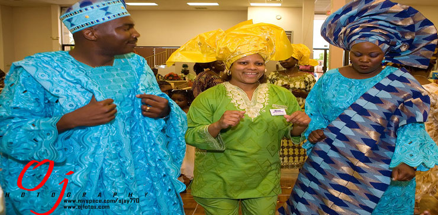

Marriages: One Name Different Versions
African Wedding
African weddings are a family affair and involve the combining of two lives, two families, and sometimes even two communities! There are many different wedding traditions in the African continent and no two are exactly alike. However, in all the communities the bride plays a very special role and is treated with respect because she is a link between the unborn and the ancestors. A bride might eventually bear a very powerful child, so she is treated with respect. In some areas of East Africa the grooms family would even move to the brides village and set up a whole new house there.
There are many steps that take place before marriage starting at a very young age where training takes place in how to be a suitable partner. Girls will many times go to schools where women teach them what is involved in marriage, and in some ethnic groups even learn secret codes and languages so that they can communicate with other married women. In the Wolof tribe there is even a time where the elders of the village gather with the bride and give advice and gifts.
African Wedding Cultural Traditions
Weddings can be very elaborate, involving feasting and dancing for days within a community, they can be very simple, or they can even be performed in huge marriage ceremonies involving many different couples.
Click Here For African Clothing For Your Wedding!
Click Here For Wedding Gift Ideas!